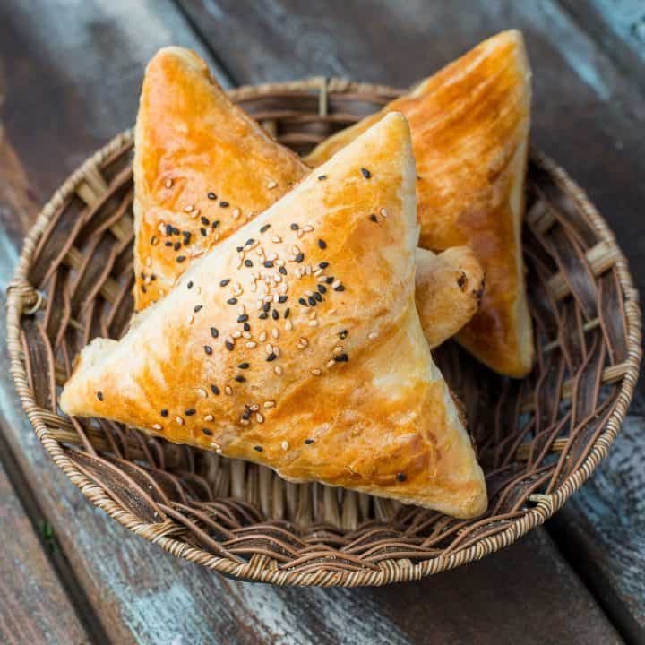

Uzbek Somsa

What is Somsa ?
The Central Asian region is located in the middle of the Silk Road and historically, was a place where a lot of merchants and traders passed by.
And since people didn’t have motorized vehicles and jetplanes back then, they needed a snack that they could take with them on a long journey that can be eaten both,
hot and cold, and be equally tasty.
This is where samsa enters the story.
It’s a great, nutritious, and filling snack that can endure the hot weather and can be just as delicious even after a few days of its preparation.
Ingredients
For The Dough
- 2 Cups Flour
- 1/3 Cup Ghee (melted)
- 1 Cup Water
- 1 Teaspoon Salt
For The Filling
- 1 lb Minced Lamb (Or Chicken/Mutton)
- 1 Garlic (Minced)
- 2 Medium-sized Onions (Chopped)
- 1 Tablespoon Grated Butter
- 1 Teaspoon Salt
- 1/2 Teaspoon Black Pepper
- 1/2 Teaspoon Corriander
- 1 Teaspoon Ground Cumin
Toppings
- 1 Tablespoon Sesame Seeds
Instruction
For The Dough
- Add the flour to a mixing bowl.
- Add the salt to the water and mix it until the salt dissolves.
- Pour the water into the bowl and start kneading.
- Shape the dough into a ball and let it rest for 20 minutes.
For The Filling
- Combine the ingredients for the filling and leave them in the fridge for 30 minutes.
- Add a little bit of flour to the surface and start to roll the dough.
- Roll the dough into a thin rectangular.
- Melt the ghee and place it on the baking sheet
- Starting from the edges, start rolling the rectangular dough like a cigar.
- Once done, cut the dough into equal triangular pieces. In our recipe, we have 20 pieces but you can use as many as you want to.
- Go back to the triangular dough pieces and roll them into circles.
- Add one tablespoon of filling in the circle.
- Drag the two opposite sides of the dough and form a triangular.
- Pinch two corners of the triangular and merge them together.
- Add some parchment paper to your baking sheet and preheat your oven to 385 F° (200C°)
- Repeat the process as many times as necessary.
- Add the samsa pastries on your baking sheet and bake for 30 minutes without changing the temperature.
In the end, the pastries should have a golden color.
- Serve it with some tea, a salad or a side dish, and enjoy!